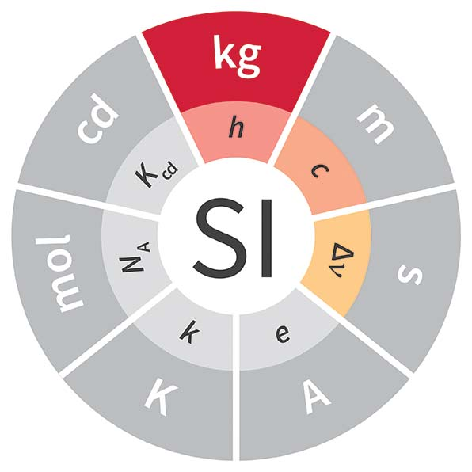
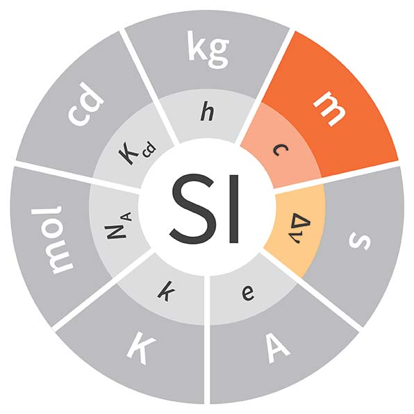
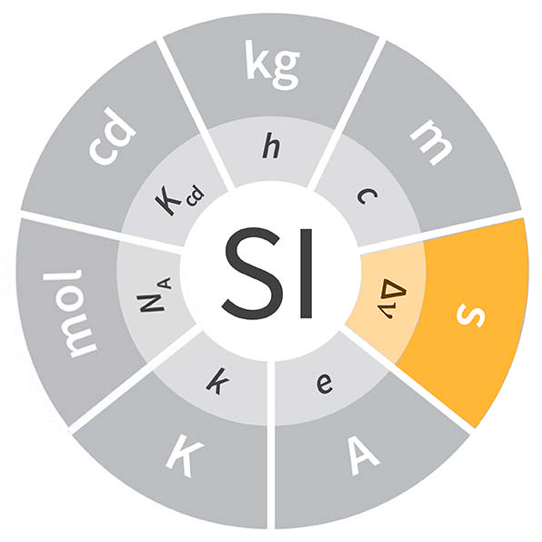
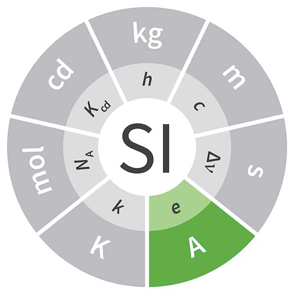
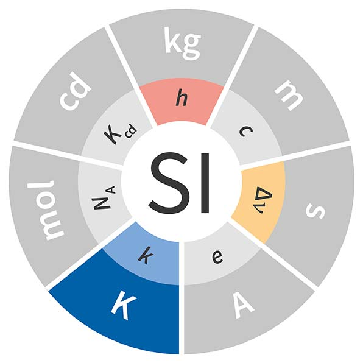
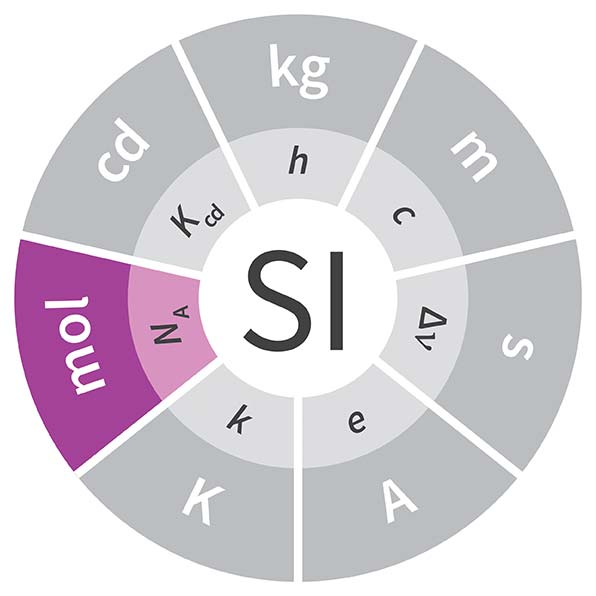
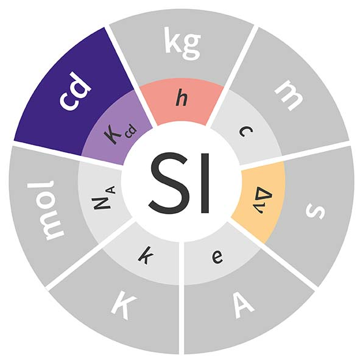

Kilogramo (kg)

El kilogramo, símbolo kg, es la unidad de masa del SI. Se define fijando el valor de la constante de Planck, h = 6,62607015.10⁻³⁴ J·s.
En noviembre de 2018 se aprobó la mayor revisión del Sistema Internacional de Unidades (SI) desde su creación en 1960. La Conferencia General de Pesas y Medidas (CGPM), organismo internacional encargado de aprobar el SI, redefinió cuatro unidades de base: el ampere, el kilogramo, el kelvin y el mol; y reformuló el metro, el segundo y la candela. Los cambios entraron en vigencia el 20 de mayo de 2019.
Las nuevas definiciones se basan en constantes fundamentales de la naturaleza, en lugar de artefactos materiales o experimentos difíciles de reproducir. Esto permite que las unidades puedan realizarse en distintos lugares del mundo con gran precisión, facilitando el desarrollo científico y tecnológico y mejorando la trazabilidad de las mediciones en la industria.

El kilogramo, símbolo kg, es la unidad de masa del SI. Se define fijando el valor de la constante de Planck, h = 6,62607015.10⁻³⁴ J·s.

El metro, símbolo m, es la unidad de longitud del SI. Se define fijando el valor de la velocidad de la luz en el vacío, c = 299.792.458 m/s, donde el segundo está definido por la frecuencia del cesio.

El segundo, símbolo s, es la unidad de tiempo del SI.
Se define estableciendo el valor numérico fijo de la frecuencia del cesio
Δν Cs, correspondiente a la transición entre niveles hiperfinos del estado
fundamental del átomo de Cesio 133, igual a
9.192.631.770 Hz.

El ampere, símbolo A, es la unidad de corriente eléctrica. Se define fijando el valor de la carga elemental, e = 1,602176634.10⁻¹⁹ C.

El kelvin, símbolo K, es la unidad de temperatura termodinámica. Se define fijando el valor de la constante de Boltzmann, k = 1,380649.10⁻²³ J/K.

El mol, símbolo mol, es la unidad de cantidad de sustancia. Un mol contiene exactamente 6,02214076.10²³ entidades elementales. Este valor corresponde al número de Avogadro.

La candela, símbolo cd, es la unidad de intensidad luminosa. Se define fijando la eficacia luminosa de una radiación monocromática de frecuencia 540.10¹² Hz, con un valor de 683 lm/W.